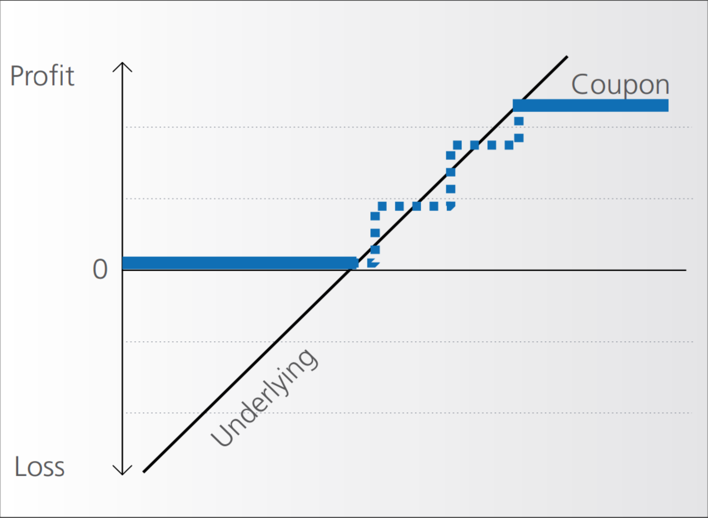
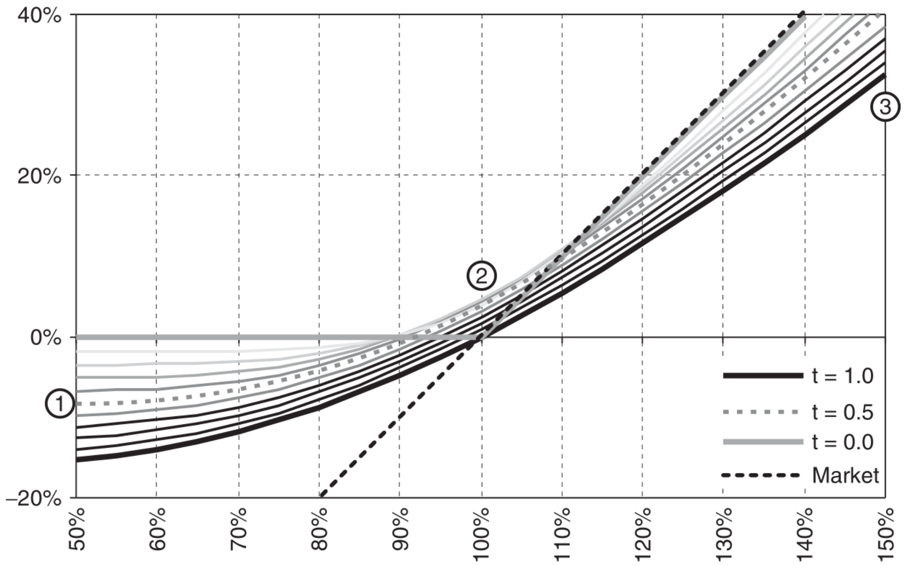
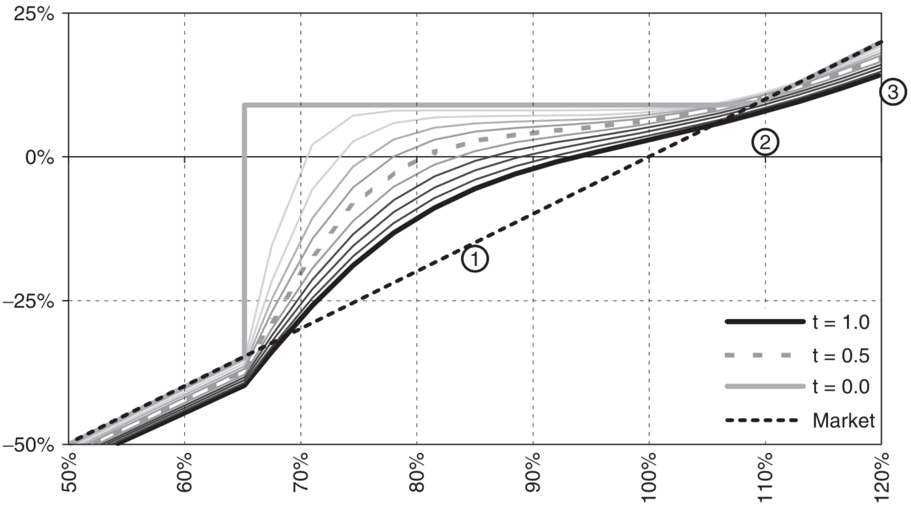

12 Structured Products I
- BLÜMKE, Andreas. How to invest in structured products: a guide for investors and investment advisors. Chichester: Wiley, 2009. xvi, 374. ISBN 9780470746790.
Learning Outcomes:
- Identify the key characteristics and benefits of structured products as investment vehicles.
- Describe the role and impact of the European Structured Investment Products Association (EUSIPA) in the structured products market.
- Differentiate between various types of structured products, including investment certificates and barrier options.
- Evaluate the mechanisms and behavior of capital protection and participation investment products through theoretical and case study approaches.
12.1 Introduction to Structured Products
12.1.1 Advantages of Investing in Structured Products
Structured products enjoy significant popularity across European states, primarily due to their capacity to balance risk and reward. These financial instruments offer several compelling advantages:
Capital Protection and Market Participation: Investors are drawn to structured products because they provide a mechanism to protect all or part of the invested capital while still allowing participation in the gains of the capital markets.
Accessibility to Regional Markets: These products facilitate access to regional markets and asset classes that may otherwise be inaccessible through direct investments.
Diverse Return Profiles: Structured products can be designed with a wide array of return profiles, adapting to various investor needs and market conditions. They remain effective across different market movements—providing potential returns in rising, sideways, or falling markets.
Liquidity: Market makers enhance the liquidity of structured products by continuously buying and selling them, which ensures a stable market presence and availability.
Sophisticated Investment Strategies: Investors can implement complex investment strategies typically available to advanced traders through the acquisition of a single structured product.
Regulatory Oversight and Transparency: These products are often listed on official, regulated markets, adding a layer of security and transparency for investors.
Tax Advantages: In some jurisdictions, structured products offer favorable tax conditions, enhancing their attractiveness as investment options.
12.1.2 European Structured Investment Products Association (EUSIPA)
- Official Website: EUSIPA
- Market Insights: EUSIPA Market Reports
Founded in 2009, EUSIPA represents a collective of national issuer associations from multiple European countries including Austria, France, Germany, Italy, Sweden, Belgium, the UK, Switzerland, and The Netherlands. As an international non-profit association governed under Belgian law, EUSIPA also maintains a presence in the EU transparency register.
EUSIPA aims to foster transparency and establish uniform market standards across Europe. It serves as a pivotal platform for its members to engage in meaningful dialogue with European policymakers, ensuring that the voices of issuers are heard in the regulatory landscape.
12.2 Definition and Nature of Structured Products (Investment Certificates)
Structured products are financial assets, which consist of various elemental components, combined to generate a specific risk-return profile (not replicable with stocks and bonds) adapted to an investor’s needs.
Structured products, often referred to as investment certificates, are essentially securitized derivatives. These are complex financial contracts encapsulated within a single security that trades on exchanges similar to stocks. These instruments are crafted and issued by financial institutions and are utilized by both retail and institutional investors. They can be traded on stock exchanges or dealt directly between parties in over-the-counter (OTC) transactions.
12.2.1 Credit Risk Associated with Structured Products
Structured products carry inherent credit risks as they are issued in the form of bearer bonds. This means the issuer’s entire assets back the liability on these products. The quality and safety of structured products are intrinsically linked to the creditworthiness of the issuer. Like traditional bonds, these products are exposed to issuer risk, which implies that in the event of issuer bankruptcy, both bonds and structured products are treated as part of the bankruptcy estate.
To mitigate such risks, investors are advised to:
- Opt for products issued by financially robust institutions.
- Diversify their investments across various issuers.
- Continuously monitor the financial health of the issuers over time.
12.2.2 Categorization of Structured Products
Structured products do not follow a universal standard for categorization. However, common classifications are often derived from industry associations such as:
- EUSIPA: European Structured Investment Products Association provides a framework for categorizing structured products within Europe.
- View the EUSIPA Derivatives Map for details.
- SVSP: Swiss Structured Products Association offers an alternative categorization scheme.
- Explore the SVSP Derivative Map for comparison.
12.2.3 Investors and Sellers of Structured Products
Investors: Private and Institutional Buyers
Structured products attract both private and institutional investors when traditional investment avenues do not meet their specific needs. These needs might include the desire for returns higher than the risk-free rate while still benefiting from capital protection. Structured products are particularly appealing in scenarios where conventional investments either do not provide sufficient returns or fail to address specific financial goals and risk profiles.
Sellers: Financial Institutions and Their Motivations
Sellers of structured products, typically financial institutions, are driven by profit. They utilize sophisticated mathematical models to determine a ‘fair value’ of the product at issuance. This fair value is then increased by a spread which covers various costs associated with the product over its lifetime. These costs include but are not limited to:
- Secondary market activities
- Listing fees
- Production of term-sheets
- Settlement processes
Among these, the most significant cost factor is hedging. Hedging expenses are challenging to predict in advance as they depend on market dynamics over the product’s life. The profit from structured products, however, is only realized at their expiry, and having a large and diverse portfolio helps in more effectively hedging as some products can offset the risks of others.
12.2.4 Platforms to Find Structured Products
Structured products can be accessed and traded through various platforms, which serve as marketplaces for these financial instruments:
- Deutsche Bank X-markets: Offers a wide range of structured products for different investment strategies.
- Website: Deutsche Bank X-markets
- Börse Stuttgart: Known for its user-friendly approach to trading structured products among other securities.
- Website: Börse Stuttgart
- Börse Frankfurt: One of Europe’s largest trading centers for securities, including derivatives and structured products.
- Website: Börse Frankfurt
12.2.5 Additional References
For further research and detailed insights into the market for structured products, the following resources are invaluable:
12.3 Barrier Options
Barrier options are exotic call or put options that include a barrier condition placed above or below the strike that, when crossed, either transfroms the exotic option into a plain vanilla option (‘in’ barriers) or cancels it altogether (‘out’ barriers).
Barrier options are integrated into various structured financial products such as barrier reverse convertibles and bonus certificates. Recognized for their complexity, these options introduce a conditional component to the standard option mechanism, making the final payoff uncertain until the option’s maturity.
12.3.1 Types of Barrier Options
Barrier options can be classified into four main types based on the direction of the barrier and its effect:
Up & Out: The option becomes void if the underlying asset’s price goes above the barrier.
Up & In: The option comes into existence when the underlying asset’s price goes above the barrier.
Down & Out: The option becomes void if the underlying asset’s price falls below the barrier.
Down & In: The option comes into existence when the underlying asset’s price falls below the barrier.
Additionally, these options can feature a rebate, a predefined amount paid to the option holder if the barrier is breached before maturity.
12.3.2 Pricing Dynamics
Barrier options are generally more cost-effective than their plain vanilla counterparts due to the added condition of the barrier. The pricing dynamics vary significantly between ‘in’ and ‘out’ options:
For ‘In’ Options: As the maturity increases, the price approaches that of a plain vanilla option, especially as the price of the underlying asset approaches the barrier.
For ‘Out’ Options: Longer maturities reduce the price, potentially approaching zero as the asset’s price nears the barrier.
12.3.3 Barrier Styles
Structured products typically incorporate barrier options with specific monitoring styles:
American-style Barriers: These allow the barrier condition to be triggered at any point during the option’s life, including intraday events, and are known for continuous monitoring.
European-style Barriers: These restrict the barrier condition to only be checked at the maturity of the option.
Although most structured products utilize American-style barriers due to cost-effectiveness, the investor focus generally lies elsewhere rather than on the barrier type itself.
| Example | American Barrier (Original) | European Barrier |
|---|---|---|
| Shark Note | Barrier 131.5%, Rebate 7.5% | Barrier 123%, Rebate 7.5% |
| Barrier Reverse Convertible | Coupon 10.4%, Barrier 75% | Coupon 8.6%, Barrier 75% |
| Bonus Certificate | Bonus 9%, Barrier 65% | Bonus 2.5%, Barrier 65% |
- Window-style Barriers: Situated between American and European styles, window barrier options are designed to activate or deactivate only during specific periods within the product’s life. For example, the barrier in some reverse convertibles might only be relevant during the final three months of a one-year term. Although not common, window barriers provide an opportunity for investors to avoid premature knockouts, with the value difference between American and window options typically being minimal.
12.4 Capital Protection Investment Products
Capital guaranteed products ensure the redemption of the initial capital invested at maturity, while also allowing participation to varying degrees in the performance of an underlying risky asset.
These products are distinguished by three primary features:
Limited Loss Potential: The potential loss is confined to the level of the capital guarantee, not accounting for the issuer’s credit risk.
Participation in Underlying Assets: Investors gain exposure to the performance of selected assets.
Minimal Guaranteed Income: Typically, these products offer low or no guaranteed income, focusing instead on capital preservation and growth through asset performance.
It’s crucial to consider the opportunity costs, such as foregone dividends or the risk-free rate. While attractive at first glance, the actual benefit depends significantly on the performance of the underlying asset at maturity:
- If the asset performs well, the capital guarantee becomes redundant.
- If the asset performs poorly, it might have been better not to invest.
Capital guaranteed products serve as a prudent option for investors who prefer not to remain in cash but are also uncertain about future market directions.
12.4.1 Uncapped Capital Protection
Classical construction of capital guaranteed products involves:
- Issuing a zero-coupon bond matching the maturity of the product to ensure capital return.
- Purchasing a call option on the underlying risky asset to allow for profit participation.
Discount and Participation Formula
If we consider an interest rate of 4% with a 5-year maturity: \[\text{Zero-bond Price} = \frac{100\%}{(1+4\%)^5} = 82.19\%\]
The available funds to purchase options (the discount) is: \[\text{Discount} = 100\% - 82.19\% = 17.81\%\]
Participation rate is calculated as: \[\text{Participation} = \frac{\text{Discount}}{\text{Option cost}}\]
Factors Influencing Product Viability
Two critical factors affect the desirability and effectiveness of capital guaranteed products:
Interest Rates: Higher rates increase the discount, thereby enhancing the capacity to purchase options.
Volatility of the Underlying: Lower volatility reduces option costs, improving participation rates.
Options for enhancing attractiveness include reducing the capital guarantee below 100%, adding caps or exotic features like knock-out barriers, and utilizing out-of-the-money options.
12.4.2 Capital Protection Products Modifications
Exchangeable Certificates
- Market Expectations: Rising volatility, sharply rising or falling underlying.
- Minimum redemption at maturity equals the capital protection (e.g., 100% of nominal).
- Value may fall below capital protection during the product’s life.
- Unlimited upside above the strike price, with possible coupon payments.
Capped Capital Protection
- Market Expectations: Rising underlying, potential for sharp falls.
- Guaranteed minimum redemption at expiry.
- Participation in positive performance up to a specified cap.
- Limited profit potential due to the cap.
Capital Protection with Knock-Out (Shark Note)

- Market Expectations: Rising underlying, unlikely to breach a set barrier.
- Full capital protection with a short- to medium-term horizon.
- Uses an up-and-out call option; if the barrier is touched, a rebate may be paid.
- Participation in performance until a barrier is hit; if breached, participation ends and a rebate might be paid.
Redemption Scenarios:
- If the underlying is below 100% of its initial value at maturity: 100% capital guarantee.
- If above 100% without touching the barrier: 100% + participation.
- If the barrier is touched: 100% + rebate.
Strategic Use:
- Set a high barrier to minimize knock-out risk or a high rebate to enhance returns if knock-out occurs.
- Autocall feature allows early redemption if the barrier is breached, suitable for reinvestment without waiting for product maturity.
Capital Protection with Coupon

- Market Expectations: Rising underlying, potential sharp falls.
- Guaranteed capital protection at maturity.
- Periodic coupon payments linked to the performance of the underlying.
- Limited upside potential.
12.4.3 General Recommendations
- Match the product with your investment horizon; the capital guarantee is effective only at maturity.
- Avoid products with lower capital guarantee than 90% (e.g., 90% guarantee means that underlying must perform by more than 10% to be break even, not considering any opportunity cost).
- Ensure the participation rate is at least 80%.
- Verify the issuer’s credit rating.
- Prefer shorter maturity periods for products like Shark Notes to reduce risk (no more than two or three years).
12.5 Behavior of Capital Guarantee Products - Case Study
| Characteristic | Details |
|---|---|
| Underlying Risky Asset | Eurostoxx50 Index |
| Maturity | 4 years |
| Implied Volatility | 23% |
| Asset’s Dividend Yield (p.a.) | 4% |
| Interest Rate Level (4-year swap rate, p.a.) | 4.5% |
| Capital Guarantee Level | 100% |
| Initial Participation | 100% |
Key Variables:
Interest Rate: A primary determinant of the price of the zero-coupon bond component of the product.
Volatility: Crucial for the valuation of the call option embedded in the product. High volatility increases the potential upside, impacting the option’s price more significantly when the asset is at-the-money.
This graph demonstrates the relationship between the spot price of the underlying asset and the price of the capital guaranteed product. The slope of the line, particularly when it approaches a 45-degree angle, indicates a delta of 100%, where the product’s price moves one-to-one with the underlying asset.

The slope of this graph illustrates how the delta of the product changes with time. Typically, the product’s participation at inception ranges from 40%-60% of its maturity level, reflecting the initial risk profile and pricing.
Note: Capital guarantee is contingent on purchasing the product at par and is valid only at maturity, not before. The guarantee level remains constant throughout the product’s life.
12.5.1 Impact of Volatility and Interest Rate Variations
- Implied Volatility Fluctuations:
- An increase in implied volatility (e.g., from 23% to 33%) can enhance the value of the call option component, as shown in the corresponding graph.
- A decrease (e.g., from 23% to 13%) typically lowers the call option’s value due to reduced potential for high returns.
Volatility is more influential when the product is at-the-money and can mitigate some losses through increased option premiums during downturns in the asset’s price.
- Interest Rate Impact:
- Rising interest rates lead to lower prices for the zero-coupon bond component, influencing the overall valuation negatively, especially if the underlying asset’s price falls simultaneously.
- Conversely, falling interest rates increase the bond’s value, cushioning any adverse effects from a drop in the underlying asset’s price.
12.5.2 Conclusive Insights
- Shifts in implied volatility influence the capital guaranteed product most when at-the-money.
- An increase in volatility tends to increase the value of the product.
- A positive shift in interest rates lowers the value of the product most when the embedded call is out-of-the-money.
- When the call is deep in-the-money, an interest rate shift has less impact.
- Everything else held equal, the passing of time (without movement on the spot) is positive for the value of the product over time, since the time value lost on the call is more than offset by the gain in the zero bond value.
12.6 Participation Investment Products
Participation products are investment vehicles that link returns directly to the performance of their underlying assets, sometimes featuring conditional downside protection or a leveraged upside.
Key Characteristics:
- Risk Profile: Generally higher risk compared to capital protection and yield enhancement products due to the absence of capital guarantees.
- Underlying Assets: Typically stocks or stock indices, but can also include commodities, real estate, and more exotic assets.
- Liquidity and Efficiency: Often very liquid, these products compete directly with ETFs in providing exposure to specific markets, themes, or regions.
12.6.1 Tracker Certificate
- Function: Mirrors the performance of one or more underlying assets. Commonly tracks excess returns (excluding dividends/yields).
- Structure: Comprised of a zero-strike call option, which values the asset minus any discounted dividends or yields.
Advantages:
- Access to Difficult Markets: Allows investment in markets or assets that are otherwise inaccessible via traditional instruments, such as private equity or certain commodities.
- Tax Efficiency: May offer favorable tax treatments compared to direct investments in the underlying assets.
12.6.2 Bonus Certificate
- Function: Combines the features of a tracker certificate with conditional downside protection.
- Structure: Includes a zero-strike call option and a long down-and-out put option.
Key Parameters:
- Participation Level: Degree to which the investor gains from positive performance of the underlying.
- Bonus Level: Additional return offered if the underlying performs above a certain threshold without breaching a downside barrier.
- Barrier Level: The price level below which the downside protection is activated.
- Maturity: Typically short, recommended no longer than two to three years.
12.6.3 Twin-Win Certificate
- Function: Provides positive participation in both the upside and downside movements of the underlying asset.
- Structure: Consists of a long zero-strike call and double down-and-out put options.

12.6.4 Outperformance Certificate
- Function: Designed for aggressive investment strategies, providing enhanced returns if the underlying outperforms expected dividends.
- Structure: Combines a zero-strike call with multiple long at-the-money calls, funded by dividends.
- Volatility and Dividends: Optimal conditions include low volatility (for cheaper options) and high dividend yields.
12.6.5 Capped Outperformance Certificate
- Function: Provides leveraged exposure to the underlying asset up to a capped level.
- Structure: A zero-strike call combined with a long at-the-money call and two short calls at higher strikes.
- Scenario Planning: Best utilized in a moderately bullish scenario with falling volatility.
- Timing and Maturity: Critical due to the short duration of the product, typically 3-9 months.
12.7 Behavior of Participation Products
Participation products such as bonus, turbo, airbag, and outperformance certificates are heavily influenced by factors like implied volatility, dividend yields, and interest rates. These factors shape the product’s performance and its strategic suitability for different market conditions.
12.7.1 Bonus Certificate - Case Study
| Factor (Increase) | Impact on Product’s Price | Effect Level |
|---|---|---|
| Spot Price | Positive | Maximum |
| Implied Volatility | Variable | High |
| Implied Correlation | Positive | Medium-Low |
| Interest Rates | Negative | Low |
| Dividends | Negative | Medium |
- Initial Sensitivity: At issuance, the delta of a bonus certificate is approximately 1, meaning its price moves almost one-for-one with the underlying asset. However, this sensitivity decreases if the spot price approaches the barrier.
- Price Stability: Bonus certificates tend to underperform during market downturns due to the drop in market value, despite their protective features.
- Maturity: Shorter maturities are preferable to reduce exposure to prolonged market volatility.
- Barrier Level: The barrier should be set considering the worst-case market scenario to ensure effective downside protection.
- Leverage and Sensitivity: As the spot price nears the barrier, the certificate’s delta becomes highly volatile, which can lead to significant price swings.
Impact of Implied Volatility
- Initial Conditions: High implied volatility at issuance allows for better pricing of protective options.
- Post-Issuance Volatility: A decrease in implied volatility post-issuance generally benefits the mark-to-market value of the certificate.

12.8 Practice Questions and Problems
- What is the value of the capital guarantee certificate at maturity if the value of the underlying asset ends at 120, the strike price of the certificate is 100, level of guarantee 100%, and participation 80%?
116
- What is the value of the capital guarantee certificate at maturity if the value of the underlying asset ends at 90, the strike price of the certificate is 100, level of guarantee 100%, and participation 80%?
100
- What is the value of the capital guarantee certificate at maturity if the value of the underlying asset ends at 63, the strike price of the certificate is 40, the cap is 50, level of guarantee 100%, and participation 130%?
53
- What is the value of the capital guarantee certificate with knock-out at maturity if the value of the underlying asset ends at 50, the strike price of the certificate is 55, the knock-out barrier is 67, level of guarantee 100%, and participation 110%? The highest value of the underlying asset during maturity was 70.
55
- What is the value of the capital guarantee certificate with knock-out at maturity if the value of the underlying asset ends at 63, the strike price of the certificate is 55, the knock-out barrier is 67, level of guarantee 100%, and participation 110%? The highest value of the underlying asset during maturity was 65.
63.8
- What is the value of the outperformance certificate at maturity if the value of the underlying asset ends at 56, the strike price of the certificate is 40, and the participation is 170%?
67.2
- What is the value of the outperformance certificate at maturity if the value of the underlying asset ends at 77, the strike price of the certificate is 40, the cap is 70, and the participation is 130%?
79
- What is the value of the bonus certificate at maturity if the value of the underlying asset ends at 35, the strike price of the certificate is 40, the knock-out barrier is 30? The lowest value of the underlying asset during maturity was 35.
40
- What is the value of the bonus certificate at maturity if the value of the underlying asset ends at 35, the strike price of the certificate is 40, the knock-out barrier is 30? The lowest value of the underlying asset during maturity was 25.
35
- What is the value of the twin-win certificate at maturity if the value of the underlying asset ends at 44, the strike price of the certificate is 50, the knock-out barrier is 40? The lowest value of the underlying asset during maturity was 35.
44
- What is the value of the twin-win certificate at maturity if the value of the underlying asset ends at 44, the strike price of the certificate is 50, the knock-out barrier is 40? The lowest value of the underlying asset during maturity was 41.
56